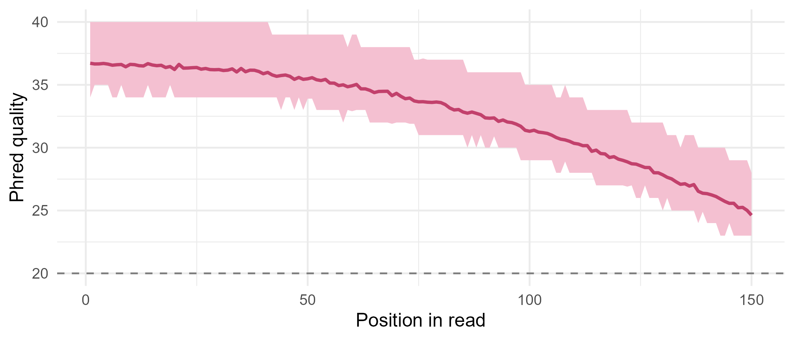

Module 10 · Lesson 2 of 13 Week 148 of 160 About 5–7 hours
Biological databases and file formats
Where sequences live, and how they’re written down
Meet the big public databases (GenBank, UniProt, the Protein Data Bank, Ensembl) and the file formats that carry their data. Parse a GenBank record by hand: its features, a gene’s location on the reverse strand, and its translation. Read FASTA files with Bioconductor’s Biostrings, and sequencing reads from a FASTQ file, decode their Phred quality scores, find the poor reads and the adapter contamination, and trim them.
Bioinformatics runs on shared data. Every sequence published in a journal is deposited in a public database, and the databases exchange their data every day. Before Amaya’s team writes a word about PL-7, they’ll compare its genes with millions already known. This lesson is about where those sequences live and the plain-text formats they travel in.
Bioinformatics file formats look old-fashioned, because many of them are older than the web. They’re all plain text, so a little regular-expression work reads any of them.
In this lesson you’ll:
- know what GenBank, UniProt, the PDB and Ensembl hold
- parse a GenBank record: its features, a gene’s location, its translation and its sequence
- read FASTA files with Biostrings, Bioconductor’s sequence package
- read sequencing reads from a FASTQ file and decode their Phred quality scores
- find poor reads and adapter contamination, and trim reads by quality
The databases
The core public databases, all free:
| Database | Holds | Run by |
|---|---|---|
| GenBank / ENA / DDBJ | every published nucleotide sequence, with annotation (the three mirror each other daily: the INSDC) | NCBI (USA), EMBL-EBI (Europe), NIG (Japan) |
| RefSeq | a curated, non-redundant selection of GenBank: one reference record per gene, transcript and protein | NCBI |
| UniProt | protein sequences and their functions; Swiss-Prot is its hand-curated half, TrEMBL the automatic rest | UniProt consortium |
| PDB | experimentally determined 3D structures of proteins and nucleic acids | wwPDB |
| AlphaFold DB | predicted structures for over 200 million proteins (Lesson 11) | EMBL-EBI, Google DeepMind |
| Ensembl | annotated genomes of animals and plants, with genes, variants and comparative data | EMBL-EBI |
| GEO / ArrayExpress | gene-expression datasets, including microarrays (Lessons 12, 13) | NCBI, EMBL-EBI |
Records are identified by accession numbers (GenBank’s look like CP012345.1, UniProt’s like P0A9Q7, the PDB’s like 1ZEM); the number after the dot is the version, which changes when the sequence does. In R, Bioconductor’s packages (Biostrings, GenomicRanges, and many more) read all these formats; the web services can be queried with packages like rentrez, but this lesson works offline, with files for PL-7.
The setup code loads Biostrings.
A GenBank record
pl7_fragment.gb is the fragment of Lesson 1 as a GenBank flat file. Its header lines (LOCUS, DEFINITION, SOURCE, …) describe the record; the FEATURES table lists annotated regions, each with a location and qualifiers (/gene=, /product=, /translation=); ORIGIN starts the sequence, in numbered blocks of ten; // ends the record.
Your turn. Read the record, and list its feature lines (those with a key in columns 6 to 20).
value = TRUE returns the lines themselves.
gb <- readLines("data/pl7_fragment.gb")
feat <- grep("^ [a-zA-Z]", gb, value = TRUE)
featFive features: the source (the whole record, 1..3000), two gene features and two CDS features (coding sequences): one at 301..600, a hypothetical protein, and one at complement(1101..1859), the kred gene. In a GenBank feature table, the key starts in column 6 and the location in column 22, a fixed layout that dates from punched cards.
Your turn. Parse the kred CDS location into a strand, a start and an end with regular expressions.
A reverse-strand location starts with complement.
gb <- readLines("data/pl7_fragment.gb")
loc <- sub("^ +CDS +", "", grep("^ CDS", gb, value = TRUE)[2])
nums <- as.numeric(regmatches(loc, gregexpr("[0-9]+", loc))[[1]])
c(location = loc, strand = ifelse(grepl("complement", loc), "-", "+"), start = nums[1], end = nums[2])Strand -, from 1,101 to 1,859. GenBank locations can be more complex: join(100..200,300..400) for a gene in pieces (eukaryotic exons), <1..500 for a gene that starts before the record does, and combinations like complement(join(...)). Biological coordinates are 1-based and include both ends, unlike most programming languages’ 0-based, half-open ranges, a classic source of off-by-one errors.
Your turn. The /translation qualifier holds the protein, spread over several lines. Collect it.
The capital letters are the range A-Z.
gb <- readLines("data/pl7_fragment.gb")
i <- grep("/translation=", gb)
j <- grep("^ORIGIN", gb) - 1 # the qualifier runs until ORIGIN
prot <- gsub("[^A-Z]", "", paste(gb[i:j], collapse = "")) # keep only capital letters
c(length = nchar(prot), start = substr(prot, 1, 20))252 residues, starting MCRKHPMKESGTGAASGIGL: the same protein you translated by hand in Lesson 1, without the stop (GenBank translations omit the *). Removing every character that isn’t a capital letter takes care of the spaces, the quotes, the line breaks and the lower-case word translation in one step.
Your turn. Read the sequence after ORIGIN, and check that it matches the FASTA file.
Compare with identical().
gb <- readLines("data/pl7_fragment.gb")
o <- grep("^ORIGIN", gb); e <- grep("^//", gb)
seq_gb <- toupper(gsub("[^a-z]", "", paste(gb[(o + 1):(e - 1)], collapse = "")))
seq_fa <- paste(readLines("data/pl7_fragment.fasta")[-1], collapse = "")
c(length = nchar(seq_gb), identical = identical(seq_gb, seq_fa))3,000 bases, identical to the FASTA file. GenBank writes sequences in lower case, in blocks of ten, sixty per line, with the position of each line’s first base; removing everything that isn’t a lower-case letter strips the numbers and spaces.
FASTA with Biostrings
Parsing by hand teaches the format; for real work, use Biostrings, Bioconductor’s package for sequences. It stores them compactly (a genome of billions of bases fits in memory), and provides DNAString, RNAString and AAString objects, sets of them (DNAStringSet), and fast functions for everything in Lesson 3.
Your turn. Read the fragment with readDNAStringSet(), and check its name, width and GC content.
As a proportion: as.prob = TRUE.
fa <- readDNAStringSet("data/pl7_fragment.fasta")
print(fa)
c(names = names(fa), width = width(fa), gc = letterFrequency(fa, "GC", as.prob = TRUE))One sequence of width 3,000, named by its FASTA header, with a GC content of 0.633, as in Lesson 1. A DNAStringSet checks its letters: only A, C, G, T, the gap -, and the IUPAC ambiguity codes (N for any base, R for A or G, Y for C or T, and so on) are allowed.
FASTQ: reads and their qualities
A sequencer doesn’t read a genome in one piece; it produces millions of short reads, here of 150 bases. FASTQ stores each read in four lines: @ and a name, the bases, +, and a quality string with one character per base. Each character encodes a Phred quality score Q = -10\log_{10} P(\text{error}): Q = 30 means a 1-in-1,000 chance that the base is wrong, Q = 20 1 in 100. The character is the one whose ASCII code is Q + 33.
Your turn. Read the FASTQ file’s lines, count the reads, and decode the first read’s qualities.
The quality strings are every fourth line, starting at line 4.
fq <- readLines("data/pl7_reads.fastq")
reads <- fq[seq(2, length(fq), 4)]
qual <- fq[seq(4, length(fq), 4)]
q1 <- utf8ToInt(qual[1]) - 33 # ASCII code minus 33
c(n_reads = length(reads), read_length = nchar(reads[1]), first_q = q1[1], last_q = q1[150])400 reads of 150 bases. The first read’s first base has Q = 37 (an error probability of 0.0002) and its last Q = 27 (0.002): quality falls along the read, as the sequencing chemistry runs down.
Your turn. Decode every read’s qualities into a 400 × 150 matrix, and compute the mean quality at each position and the expected number of errors per read.
P = 10^{-Q/10}.
fq <- readLines("data/pl7_reads.fastq")
qual <- fq[seq(4, length(fq), 4)]
Q <- t(sapply(qual, function(q) utf8ToInt(q) - 33)) # reads x positions
p_err <- 10^(-Q / 10)
c(mean_q_first = mean(Q[, 1]), mean_q_last = mean(Q[, 150]), errors_per_read = mean(rowSums(p_err)))The mean quality is 36.7 at the first position and 24.6 at the last, and a read has on average 0.67 expected errors in its 150 bases (the sum of its error probabilities). The plot below shows the decline along the read.

Your turn. Some reads are poor throughout (a cluster on the flow cell that went wrong). Count the reads whose mean quality is below 20.
Below 20.
fq <- readLines("data/pl7_reads.fastq")
qual <- fq[seq(4, length(fq), 4)]
mean_q <- sapply(qual, function(q) mean(utf8ToInt(q) - 33))
c(poor = sum(mean_q < 20), share = mean(mean_q < 20), median_q = median(mean_q))24 reads, 6%, have a mean quality below 20, against a median of 33.9. Their bases are wrong about once in ten, and they’re usually discarded whole.
Your turn. When the DNA fragment being sequenced is shorter than the read, the sequencer reads on into the adapter, a synthetic sequence attached during library preparation. The common Illumina adapter starts AGATCGGAAGAGC. Find the reads that contain it, and where.
Search for "AGATCGGAAGAGC".
fq <- readLines("data/pl7_reads.fastq")
reads <- fq[seq(2, length(fq), 4)]
hits <- regexpr("AGATCGGAAGAGC", reads, fixed = TRUE)
c(reads_with_adapter = sum(hits > 0), median_start = median(hits[hits > 0]))6 reads contain the adapter’s first 13 bases exactly, starting at a median position of 114 (one more contains it with a single sequencing error, which a fuzzy search like agrep() finds). Everything from the adapter on isn’t PL-7’s DNA, and left in, it would make reads fail to align or, worse, align wrongly.
NoteGo deeper: where Phred scores come from
Phil Green’s phred program (1998) estimated the error probability of each base from features of the sequencing trace (peak spacing, the ratio of called to uncalled peaks) by calibrating against sequences of known truth, and the logarithmic scale stuck. Modern sequencers calibrate their own scores the same way, and recalibration tools (like GATK’s base quality score recalibration) re-estimate them from known variants, because the reported scores are often optimistic. Older Illumina files used an offset of 64 instead of 33 (“Phred+64”), so a FASTQ file’s quality characters, if they’re all above @, may need a different offset. Brent Ewing and Phil Green, “Base-calling of automated sequencer traces using phred. II. Error probabilities”, Genome Research 8, 1998, pages 186 to 194.
Challenge round
Challenge 1 · Trimming. Trim each read at the first position where the quality drops below 20, and at the adapter if there is one, whichever comes first. Then drop reads shorter than 50 bases, and report how many survive and their mean length.
Keep the bases before the cut: subtract 1.
fq <- readLines("data/pl7_reads.fastq")
reads <- fq[seq(2, length(fq), 4)]; qual <- fq[seq(4, length(fq), 4)]
keep_len <- mapply(function(r, q) {
qs <- utf8ToInt(q) - 33
cut_q <- which(qs < 20)[1]; if (is.na(cut_q)) cut_q <- nchar(r) + 1
cut_a <- regexpr("AGATCGGAAGAGC", r, fixed = TRUE); if (cut_a < 0) cut_a <- nchar(r) + 1
min(cut_q, cut_a) - 1
}, reads, qual)
c(surviving = sum(keep_len >= 50), mean_length = mean(keep_len[keep_len >= 50]))376 reads survive, with a mean length of 149.5 bases: most good reads never drop below Q20, so they’re kept whole; the adapter reads are cut back to about 110 bases, and the 24 poor reads mostly fall below 50 bases at their first bad base and are dropped. Real pipelines (Trimmomatic, cutadapt, fastp) do the same with more care.
Challenge 2 · A gentler trimmer. Cutting at the first base below Q20 throws away a lot of good sequence after a single bad base. In RStudio, write a sliding-window trimmer instead (cut where the mean quality of 4 consecutive bases drops below 20, as Trimmomatic does), and compare the surviving bases.
Quick quiz
1. Which database holds experimentally determined protein structures?
UniProt holds sequences and functions; AlphaFold DB holds predicted structures.
2. A GenBank location complement(1101..1859) means:
Read the region, then reverse-complement it.
3. A Phred score of 30 means an error probability of:
10^{-30/10}.
4. How is a Phred score stored in a FASTQ file?
One character per base, on the fourth line of each record.
5. Adapter sequence appears in a read when:
It must be trimmed before the read is used.
6. Biological coordinates are usually:
A frequent source of off-by-one errors when mixing tools.
Wrap-up
You’ve read biology’s file formats. Here’s what you’ve learned:
- The databases: GenBank for nucleotide sequences, UniProt for proteins, the PDB for structures, Ensembl for genomes, GEO for expression data; records have versioned accession numbers.
- GenBank records: a header, a feature table with locations and qualifiers, and the sequence; the kred CDS is at
complement(1101..1859), and its/translationmatches Lesson 1’s. - Biostrings reads FASTA into
DNAStringSetobjects. - FASTQ stores reads with Phred qualities, Q = -10\log_{10}P, as characters with ASCII code Q + 33; quality falls along the read, 6% of the reads were poor, and a few had adapter sequence.
TipPractice in RStudio (optional, about an hour)
Download pl7_fragment.gb and pl7_reads.fastq into your project’s data-raw/ folder, and install Biostrings with BiocManager::install("Biostrings").
- A real record. Install rentrez and download a real GenBank record, for example
entrez_fetch(db = "nuccore", id = "NC_000913.3", rettype = "gb")(the E. coli K-12 genome; it’s big, so try a gene record instead). Parse its features with your code from this lesson. - Biostrings for FASTQ.
readQualityScaledDNAStringSet("pl7_reads.fastq")reads the reads with their qualities. Useas(quality(x), "matrix")to get the score matrix, and compare it with yours. - Map the reads. Use
matchPattern()(Lesson 3) to find where the first 20 bases of each good read occur in the fragment, on either strand. How evenly do the reads cover the fragment? - UniProt. Look up a real short-chain dehydrogenase on uniprot.org, for example by searching for “short-chain dehydrogenase Rhodococcus”, and read its entry: function, catalytic activity, sequence and structure links.
NoteKey words from this lesson
- GenBank, RefSeq, UniProt, PDB, Ensembl, GEO
- The main public databases for nucleotide sequences, curated references, proteins, structures, genomes and expression data.
- Accession number
- A database record’s stable identifier, with a version number after the dot.
- Feature table
- The part of a GenBank record listing annotated regions with their locations and qualifiers.
- FASTA
-
A text format for sequences: a
>header line, then the sequence. - FASTQ
-
A text format for sequencing reads: name, bases,
+, and a quality string. - Phred quality score
- Q = -10\log_{10} P(\text{error}) for a base call.
- Adapter
- A synthetic sequence attached to DNA fragments for sequencing, which appears in reads longer than their fragment.
- Bioconductor, Biostrings
- The project of R packages for genomics, and its core package for biological sequences.
NoteWant to read more?
- Susan Holmes and Wolfgang Huber, Modern Statistics for Modern Biology (free online), chapter 2, with Biostrings examples.
- The Bioconductor website, whose Biostrings vignettes cover reading, writing and manipulating sequences.
- The NCBI’s “GenBank sample record” page, which explains every field of a GenBank record.